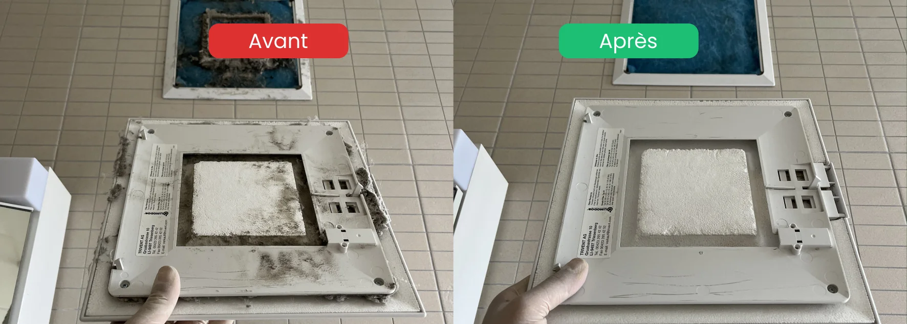

- Erreur n°1 : ignorer l'intérieur du caisson de la hotte
- Erreur n°2 : nettoyer un joint silicone moisi sans le remplacer
- Erreur n°3 : laver les vitres avec un chiffon classique en plein soleil
- Erreur n°4 : oublier de déplacer les appareils électroménagers
- Erreur n°5 : négliger les détails (prises, plinthes, grilles de ventilation)
Pourquoi ces erreurs coûtent une partie de la caution
Un état des lieux de sortie raté se traduit presque toujours par une retenue sur caution évitable. Dans la majorité des cas, ce ne sont pas les grandes surfaces qui posent problème — c'est une série de petits oublis que la régie note systématiquement.
Voici les 5 erreurs nettoyage fin de bail que nous constatons le plus souvent chez nos clients avant qu'ils nous appellent en urgence.
Erreur n°1 : oublier le caisson de la hotte

La hotte est l'élément le plus souvent signalé lors des états des lieux. Le problème ne vient pas que du filtre — c'est l'intérieur du caisson, les parois graisseuses et la grille d'aspiration que la plupart des locataires ne pensent pas à nettoyer.
La régie ouvre systématiquement le caisson. Si les parois sont grasses ou si le filtre est encrassé, c'est noté et facturé.
Erreur n°2 : négliger les joints de silicone
Les joints de douche, de baignoire et de lavabo noircissent avec le temps à cause des moisissures. Un simple nettoyage de surface ne suffit pas — si le noir est profondément ancré dans le silicone, il faut le remplacer entièrement.
C'est un détail que les régies vérifient systématiquement. Un joint noir ou décollé = remarque assurée.
Erreur n°3 : laisser des traces sur les vitres
Nettoyer ses vitres avec un chiffon classique laisse des traces, surtout en lumière rasante. La régie inspecte les vitres en se plaçant de côté, face à la lumière — chaque trace est visible.
Le bon matériel fait toute la différence : racloir professionnel + mouilleur + produit verrerie, dans cet ordre.
Erreur n°4 : ne pas nettoyer derrière et sous les appareils
Derrière le réfrigérateur, sous la machine à laver, sous la cuisinière — ces espaces accumulent poussière et graisse pendant des années. Les déplacer le jour du nettoyage révèle souvent un sol dans un état difficile à rattraper rapidement.

Commencez par déplacer tous les appareils au moins 2 semaines avant l'état des lieux pour avoir le temps de traiter les taches.
Erreur n°5 : oublier les petits détails que la régie remarque
Ce sont souvent les détails qui font la différence entre un état des lieux validé et un état des lieux contesté :
- Prises électriques et interrupteurs : jaunis ou encrassés, traces de doigts visibles
- Plinthes : poussiéreuses, surtout dans les coins
- Charnières de portes : traces de rouille ou de graisse
- Grilles de ventilation : obstruées par la poussière
- Intérieur des placards : miettes, taches ou odeurs
- Calfeutrage des fenêtres : moisissures dans les rainures
FAQ – Erreurs à éviter avant l'état des lieux
Quelle est l'erreur nettoyage fin de bail la plus coûteuse ?
La hotte de cuisine. Un caisson gras non nettoyé peut entraîner une facturation par la régie pour un nettoyage professionnel imposé. Le coût varie selon la régie, mais reste systématiquement supérieur au temps qu'il aurait fallu pour le faire soi-même.
Faut-il vraiment remplacer les joints silicone avant un état des lieux ?
Oui, si les moisissures sont profondément ancrées et ne partent plus avec un produit anti-moisissure. Un joint noir entraîne presque toujours une remarque. Le remplacement coûte une dizaine de francs et prend moins d'une heure.
Peut-on rattraper un nettoyage bâclé la veille de l'état des lieux ?
C'est risqué. Certaines tâches demandent du temps de pose (détartrant, dégraissant, remplacement de joint). Faire l'impasse entraîne soit un résultat insuffisant, soit l'obligation de faire appel à un professionnel en urgence — souvent à un tarif majoré.
La régie peut-elle refuser l'état des lieux pour un seul détail ?
Oui. Un joint moisi, une hotte grasse ou des vitres avec traces suffisent à provoquer une retenue. La régie applique une checklist standardisée — elle ne fait pas d'exception, même si le reste du logement est impeccable.
Faut-il prendre des photos avant l'état des lieux ?
Absolument. Photographiez chaque pièce nettoyée, avec date visible. Ces preuves servent en cas de désaccord avec la régie, surtout si vous contestez une retenue sur caution.
En résumé
Les 5 erreurs nettoyage fin de bail les plus fréquentes — hotte, joints, vitres, derrière les appareils, petits détails — sont aussi les plus faciles à éviter avec un peu de méthode et d'anticipation. Commencez 2 semaines avant la remise des clés, traitez les zones problématiques en priorité, et photographiez le résultat pour vous protéger.